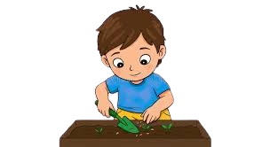

Hacer un hoyo
Cava un hoyo en la tierra con la profundidad adecuada para la semilla que vas a plantar. Asegúrate de que el suelo esté suelto y libre de piedras u otros obstáculos que puedan dificultar el crecimiento de las raíces.
Enterrar la semilla
Coloca la semilla en el fondo del hoyo con cuidado. Procura que quede centrada y en la posición recomendada para favorecer una correcta germinación.

Tapar con tierra
Cubre la semilla con una capa de tierra sin compactarla demasiado. La tierra debe quedar lo suficientemente firme para proteger la semilla, pero permitir que el agua y el aire circulen.
Regar
Riega suavemente la zona para humedecer la tierra sin encharcarla. Mantén el suelo húmedo durante los primeros días para favorecer la germinación y el desarrollo inicial de la planta.